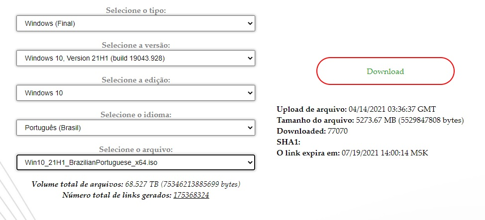
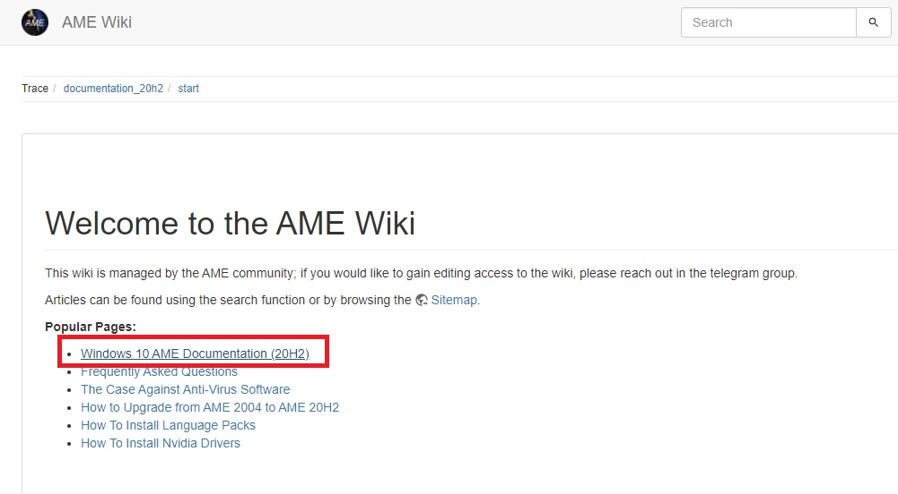
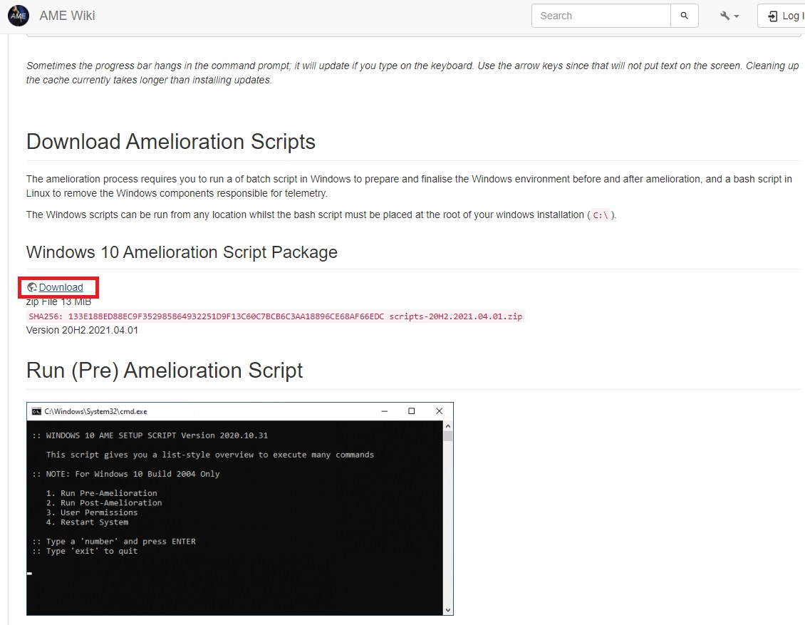
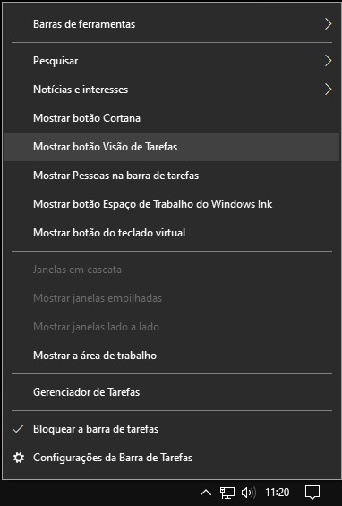
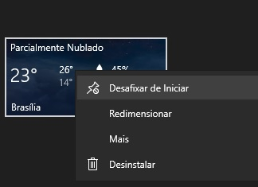

Windows 10 Ameliorated (AME) Scripts
Introdução
Não é segredo que o Windows tem uma gigantesca quantidade de bloat pós instalação, uma das maneiras de remover tanto quanto possível é através do [Ameliorated Script].
Segunda a própria página: “Windows 10 sem spyware e mais estabilidade e segurança. Um conjunto pragmático de modificações no Windows.”
“O Windows 10 AME visa fornecer uma compilação estável, não intrusiva, mas totalmente funcional do Windows 10 para qualquer pessoa que necessite de utilizar o sistema Windows nativamente. Spywares, que são abundantes no Windows 10 por padrão, não são desativados usando a política de grupo, entradas de registro ou várias outras soluções alternativas – eles são totalmente removidos e excluídos do sistema, a nível de executável. Isso inclui o Windows Update e quaisquer serviços parecidos destinados a remendar o sistema através do que é essencialmente um backdoor universal. Os principais aplicativos incluídos por padrão, como o Edge, o Windows Media Player, Cortana, bem como quaisquer aplicativos appx, também são eliminados com sucesso. O tamanho total dos arquivos removidos é de cerca de 2 GB. Um grande esforço tem sido investido na manutenção da estabilidade do sistema subsequente, para uma operação e experiência de usuário sem bugs, já que muitos desses serviços removidos conflitam com os principais recursos do Windows 10.”
É extremamente recomendado que qualquer pessoa que tente reproduzir as etapas deste guia seja moderadamente versada em Linux e, consequentemente, também não tenha medo de usar a linha de comando!
Também é necessário um pen drive de pelo menos 8gb para realizar o processo numa tacada só, mas se você tiver uma segunda máquina para baixar os arquivos para o pen drive você pode fazer o pré e o pós separadamente.
Começando a instalação
1 - Baixando as ISOs
Você pode simplesmente baixar a .ISO do site do [ameliorated.info]... Mas como você sabe, aqui nós preferimos o caminho das pedras!
Primeiramente baixe última build do Windows através do [TechBench]
- Em Selecione o tipo: escolha Windows (Final);
- Em Selecione a versão: escolha a versão do Windows 10 mais recente com o build number mais alto;
- Em Selecione a edição: escolha Windows 10;
- Em Selecione o idioma: escolha Português (Brasil);
- Em Selecione o arquivo: escolha o arquivo correto para a sua arquitetura (x32 ou x64);
- Por fim clique no botão Download: para baixar a .ISO;
Também é necessário que você tenha no pen drive uma live .ISO do Linux a disposição (recomendo qualquer versão do [Linux Mint] mesmo para tal) para que você execute o script pós amelioration .sh.

2 - Prepare o pen drive e instale o sistema
Para preparar o pen drive primeiramente siga o tutorial de [Gravação do Pendrive com o Ventoy] e passe a imagem do Windows e a do Linux para o pen drive, aproveite para criar uma pasta na raiz do pen drive e já extraia e deixe nessa pasta os scripts que estão no site do [AME wiki] em Windows 10 AME Documentation > Download Amelioration Scripts > Windows 10 Amelioration Script Package > Download. (eu também recomendo que você já deixe nessa pasta um instalador offline do [Mozilla Firefox] já que o Edge será removido do sistema)


Já com o pendrive contendo a imagem do Windows, a imagem do Linux e os scripts numa pasta na raiz, Instale o Windows normalmente [seguindo o tutorial aqui da página] e lembre-se: PARA QUE O PROCESSO FUNCIONE É VITAL QUE NENHUMA CONEXÃO COM A INTERNET SEJA ESTABELESCIDA EM NENHUMA ETAPA DA INSTALAÇÃO!
LET'S DEBLOAT!
Uma vez que a instalação finalizou e a área de trabalho foi carregada, clique com o botão direito na barra de tarefas e faça uma limpa nela removendo a barra de pesquisa, notícias e interesses o botão visão de tarefas, e no menu iniciar desfixe TODOS OS LADRILHOS!


Caso tenha dúvidas siga como referência o vídeo abaixo:
Após ter limpado todos os elementos do menu iniciar e barra de tarefas, vá na pasta do pen drive e monte a iso do Windows que está no pen drive, depois de montar a iso navegue até a pasta em que os scripts estão, clique com o botão direito do mouse no script .bat e rode ele como administrador.
Assim que abrir o terminal, digite 1 para a opção Pre-Amelioration e depois tecle Enter, em Please mount the Windows 10 installation media and specify a drive letter. digite a letra da unidade em que a .ISO do Windows foi montada, tecle Enter e espere que o processo termine, pode demorar bastante tempo para remover todo o bloatware...
Uma vez que o processo tenha finalizado, copie o script .sh para a raiz do Windows e desligue o computador.
Ligue o computador e inicialize o Linux, abra o gerenciador de arquivos e navegue até o diretório raiz do Windows, clique com o botão direito e selecione "Abrir um terminal aqui", uma vez no terminal digite ./nomedoscript.sh e tecle enter, caso der algum erro de "command not found" no início da execução do script, ligue o Linux na internet e instale o dos2unix (sudo apt update && sudo apt install dos2unix para o caso do Linux Mint) e converta o script com dos2unix nomedoscript.sh para resolver o problema e permitir a execução. Uma vez que o script termina de rodar você já pode reiniciar para o seu Windows.
Sistema pronto... E agora?
Se você fez tudo até aqui você já tem um Windows limpo e funcional +1 navegador, mas é necessário que você instale os drivers manualmente já que o Windows Update foi removido do seu computador. Para aqueles que querem o bom e velho Menu Iniciar recomendo a instalação do [Open-Shell-Menu], para os demais softwares recomendo que veja a nossa sessão de [Alternativas de Software Open-Source].